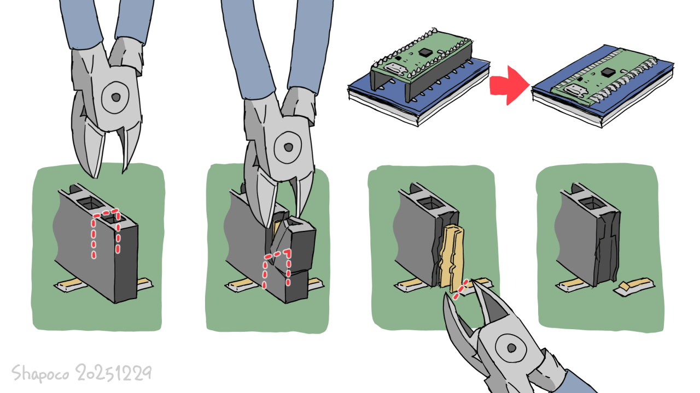
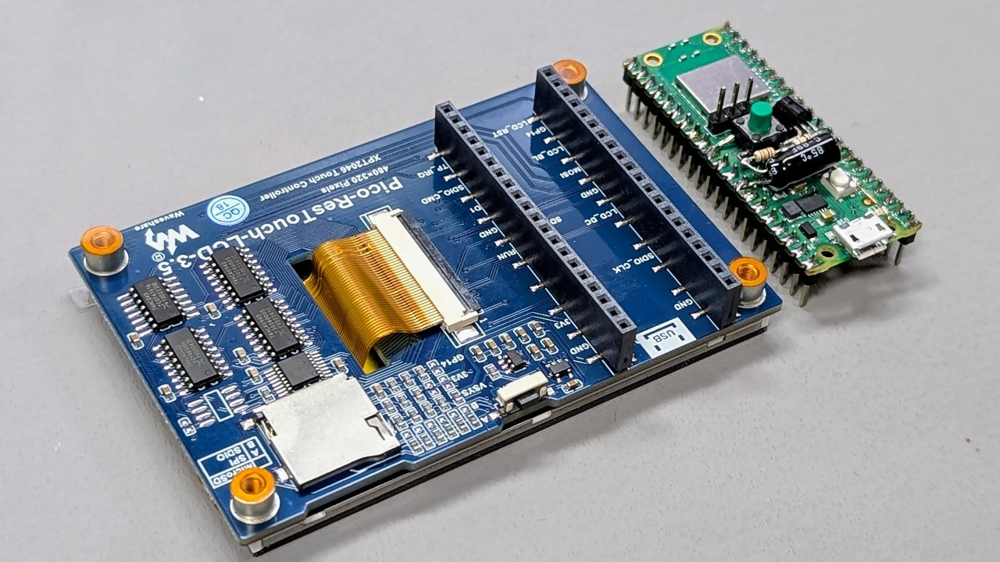
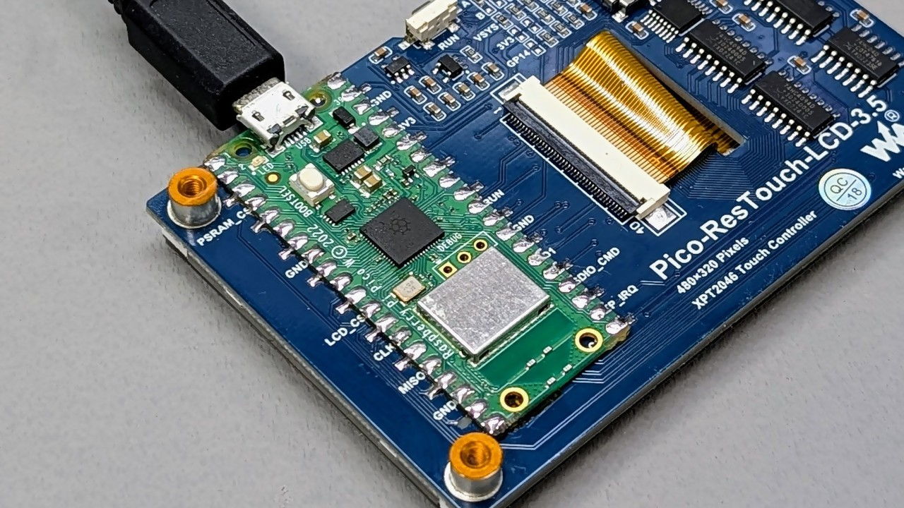
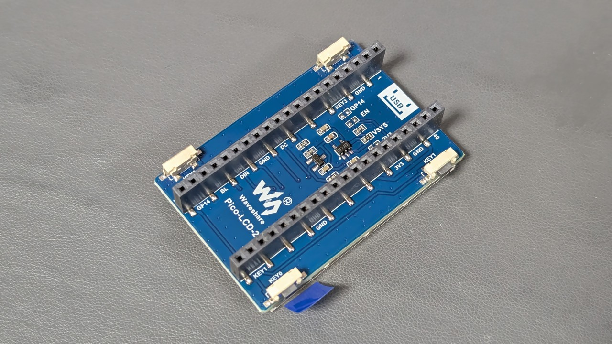
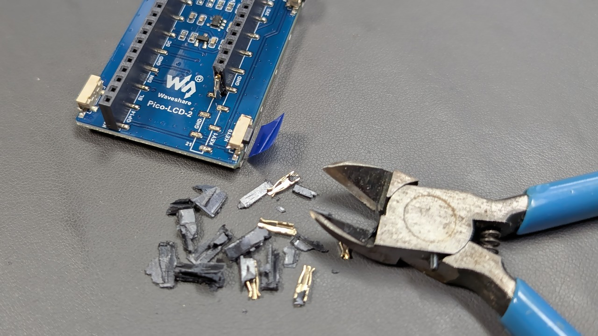
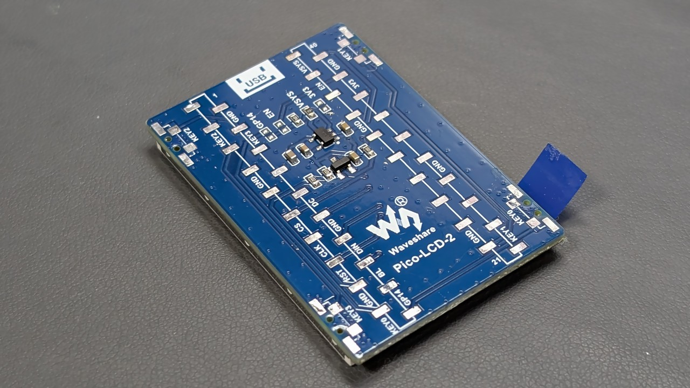

Waveshare の LCD モジュールから表面実装ピンソケットをムリヤリ除去して薄くする
2025/12/29 |
記事のソース
Waveshare のラズピコ用 LCD モジュールは入手しやすくて良いですが、 ピンソケットの高さの分厚くなるので除去して薄くしてみました。
スルーホールタイプのピンソケットであれば樹脂部分と基板の隙間に ニッパーやドライバーを差し込んでこじれば樹脂部分だけ除去することが できますが、表面実装タイプだとランドが剥がれてしまいます。
Waveshare のモジュールに使用されているピンソケットは樹脂が結構脆く、 ニッパー等で簡単に割ることができるので、1 ピンずつ破壊していけば 除去することができました。

ピンソケットの間が平らなモジュールであれば、Raspberry Pico を 直接実装することができます。




